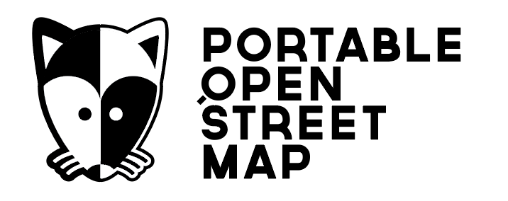
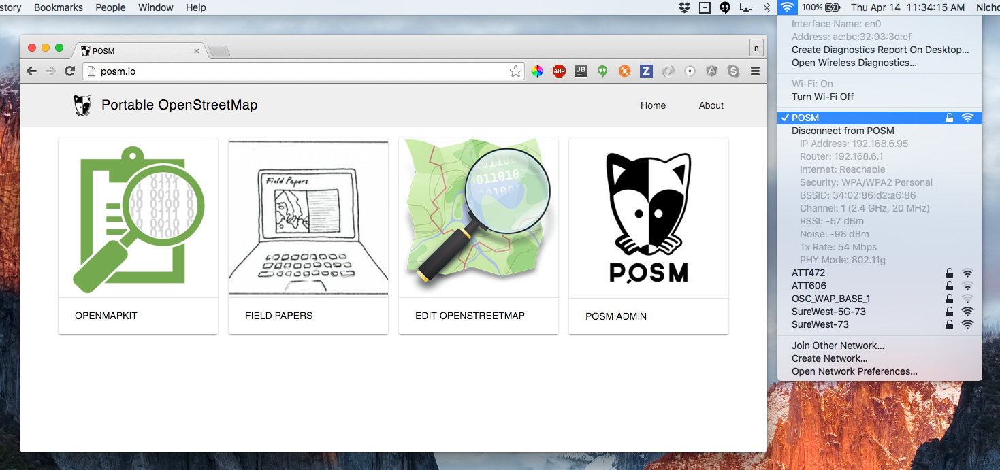

POSM allows large groups of people to edit OpenStreetMap fully disconnected from the internet. It is the integration of a suite of open source tools on a small, portable server that broadcasts a wifi hotspot.
Initially, POSM was a project for the American Red Cross GIS team to enable the Missing Maps field enumeration and mapathon workflow in an offline environment. The background story stems from the effort to integrate OpenMapKit with Field Papers, and the result went a step further by also providing the OpenStreetMap software stack on our offline server.
The four main components are OpenMapKit, Field Papers, the OpenStreetMap website, and POSM Admin. The software itself is installed using POSM Build.

Workflow
The high-level workflow for mapping with the POSM is as follows:
- Create an export of OSM PBF Source data along with scraped MBTiles base maps from the POSM OSM Export Tool.
- Load the export onto the POSM with POSM Admin.
- Create a Field Papers atlas of the area you want to survey.
- Check out a Field Papers deployment on OpenMapKit Android.
- Survey data on your phone and fill in the details on your field paper.
- Upload your survey data from your phone to OpenMapKit Server.
- Digitize your field paper sketches in the POSM iD Editor and validate your OpenMapKit uploads.
- Finally, use the Changeset Replay Tool to synchronize your POSM edits with the main OpenStreetMap.
Source Code
POSM's source code consists of several repos on Github. The main POSM repo provides links to the individual components and modules used.
https://github.com/americanredcross/posm
An overview of the main components of POSM can be found in the POSM Software page.
Slides
In May of 2016, I had the good fortune to travel with the Red Cross to Ecuador to map Huaquillas using the POSM. Seth Fitzsimmons from Stamen and I presented on our trip at the 2016 CUGOS Spring Fling. The slides from are presentation are below:
More Information
There is work-in-progress documentation on the main POSM repo. Also, don't forget to check out the OpenMapKit page here at the Outpost.